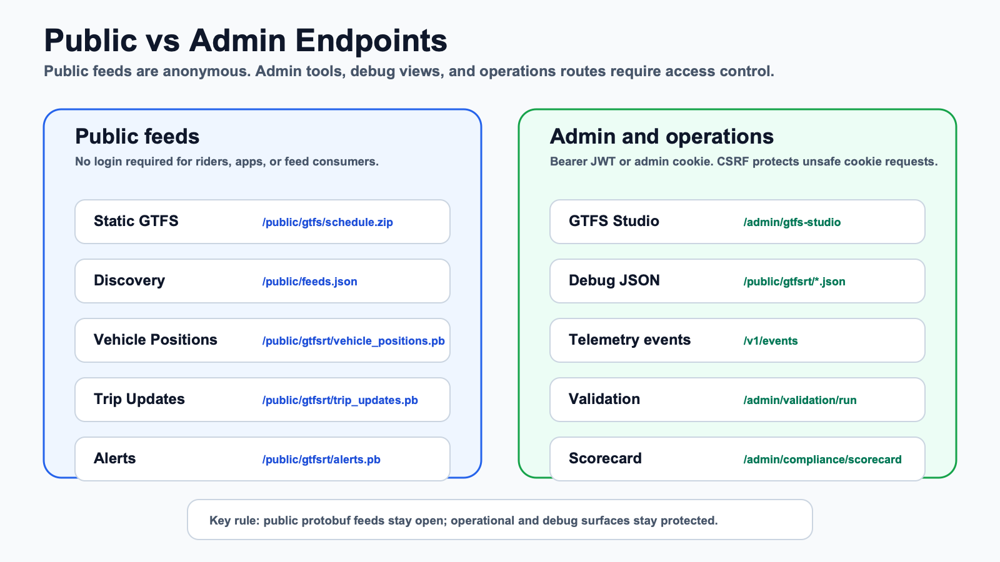

GPS, AVL, CSV, or device input
Transform source observations into the authenticated POST /v1/telemetry contract.
Integration boundaries
Open Transit RT treats integrations as bounded sidecars, manifests, command adapters, or connector processes. It does not load arbitrary dynamic backend code.
Transform source observations into the authenticated POST /v1/telemetry contract.
Keep predictors behind internal/prediction.Adapter with deterministic fallback available.
Monitoring/export examples stay redacted and local unless a deployment owner configures a private destination.

Connector examples and conformance checks do not prove named vendor compatibility, hardware certification, real AVL reliability, consumer acceptance, production readiness, or production-grade ETA quality.